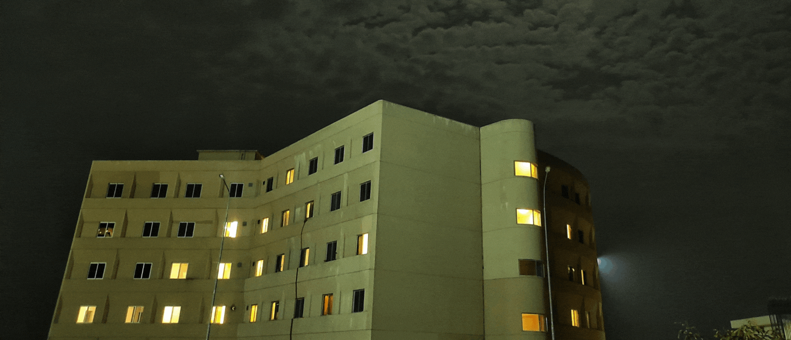
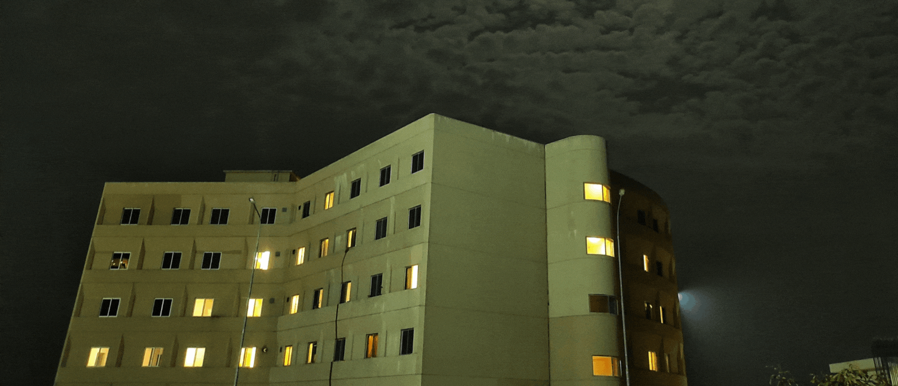
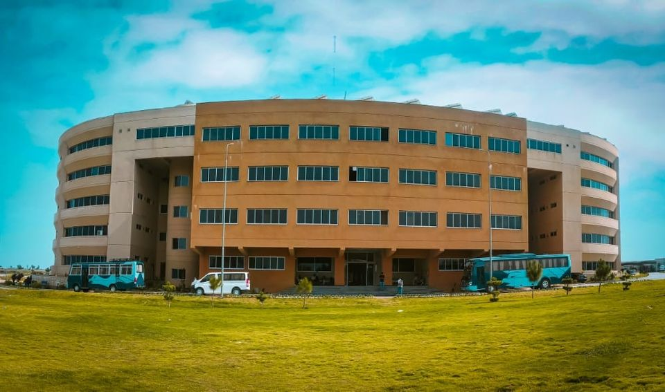
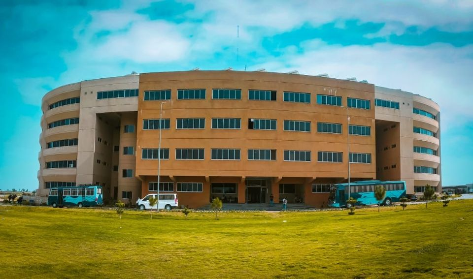

Department of Electrical Engineering
Introduction
Message from Chair Department
Programs Offered
Mission
Introduction
The Department of Electrical Engineering at Air University Aerospace and Aviation Campus, Karma (AUA&ACK) is in operation since Fall 2020. The department is offering undergraduate and postgraduate programs in the discipline of electrical engineering. At undergraduate level the program offers two streams for specialization, i.e. Power and Electronics. At postgraduate level, the specialization streams include, Power Systems, Control Systems, Communication & Signal Processing, and Electronics & Embedded Systems. The curriculum offered has emphasis on both the theoretical as well as the practical knowledge of the latest trends in academia and industry and is targeted to equip students with the requisite know-how for solving real-life problems and coping with the challenges of the professional world ahead. The department has state of the art laboratories which are equipped with the latest training aids in order to enhance the practical learning experience of the students. The laboratories include Electronic Systems, Digital Electronics, Embedded Systems, Power Electronics, Electrical Machines, Power Systems, RF and Optical Communication, Digital Signal Processing, Antenna and Microwave, Instrumentation and Measurement, and Control Systems. Students also have access to computer laboratories with latest computer hardware and software for computer based courses. For research purposes, a dedicated high performance computing lab has been established for postgraduate students, with access to IEEE digital library and other digital libraries.
 


 
